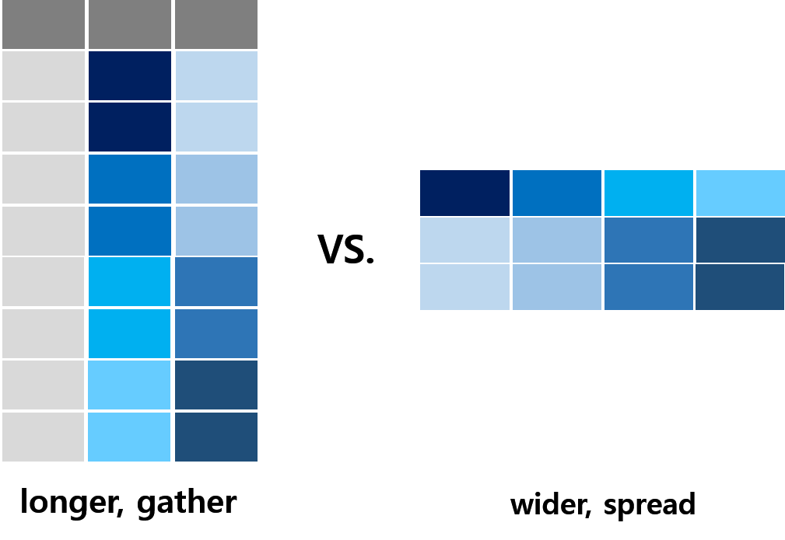
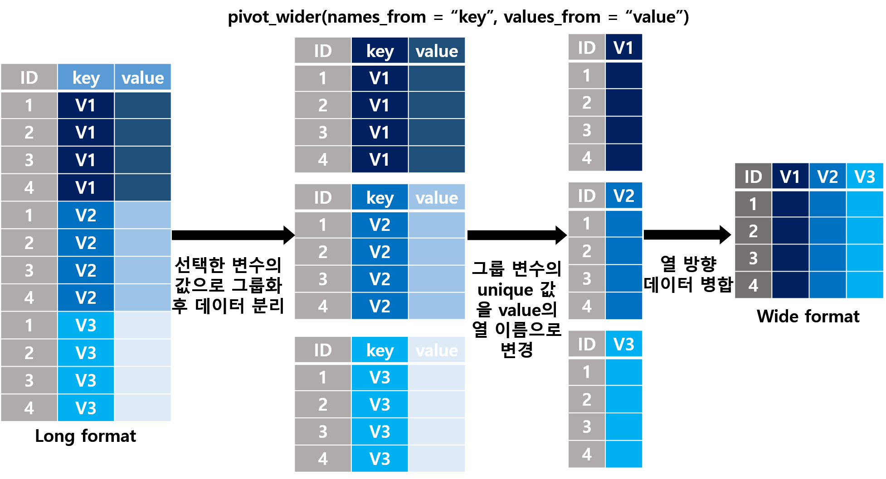
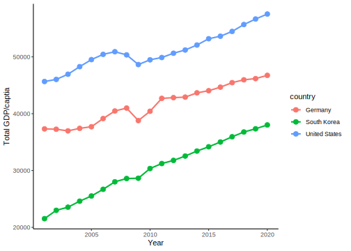
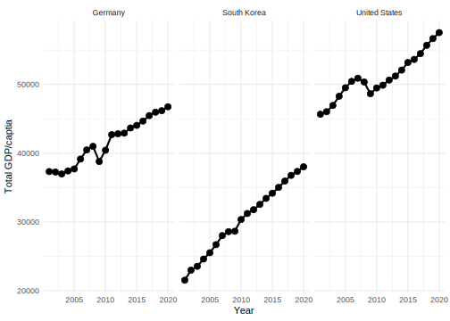

4.5 데이터 변환
데이터 분석에서 적어도 80% 이상의 시간을 데이터 전처리에 할애
실제 데이터(real world data, RWD)가 우리가 지금까지 다뤄왔던 예제 데이터 처럼 깔끔하게 정리된 경우는 거의 없음.
- 이상치(outlier)
- 결측(missing data)
- 변수 정의의 부재(예: 어러 가지 변수 값이 혼합되어 한 열로 포함된 경우)
- 비정형 문자열로 구성된 변수
- 불분명한 데이터 구조
- …
Tidyverse 세계에서 지저분한 데이터(messy data)를 분석이 용이하고(전산 처리가 쉽고) 깔끔한 데이터(tidy data)로 정제하기 위해 데이터의 구조를 변환하는 함수를 포함하고 있는 패키지가 tidyr
여기서 “tidy”는 “organized”와 동일한 의미를 가짐
tidyr은 Hadely Wickam 이 개발한 reshape 와 reshape2 패키지 (Wickham 2007)가 포함하고 있는 전반적인 데이터 변환 함수 중 tidy data를 만드는데 핵심적인 함수만으로 구성된 패키지
4.5.1 Tidy data
아래 강의 내용은 Wickham and others (2014) 의 내용을 재구성함
- 데이터셋의 구성 요소
- 데이터셋은 관측값(value)으로 구성
- 각 관찰값은 변수(variable)와 관측(observation) 단위에 속함
- 변수는 측정 속성과 단위가 동일한 값으로 구성(예: 키, 몸무게, 체온 등)
- 관측(observation)은 속성(변수) 전체에서 동일한 단위(예: 사람, 가구, 지역 등)에서 측정된 모든 값
Figure 4.10: 데이터의 구성 요소
Tidy Data Principles
- 각각의 변수는 하나의 열로 구성된다(Each variable forms a column).
- 각각의 관측은 하나의 행으로 구성된다(Each observation forms a row).
- 각각의 값은 반드시 자체적인 하나의 셀을 가져야 한다(Each value must have its own cell).
- 각각의 관찰 단위는 테이블을 구성한다(Each type of observational unit forms a table).
- 2 \(\times\) 2 교차설계 데이터 예시: 2개의 열(column), 3개의 행(row), 각 행과 열은 이름을 갖고 있음(labelled)
| treatmenta | treatmentb | |
|---|---|---|
| James McGill | NA | 1 |
| Kimberly Wexler | 17 | 14 |
| Lalo Salamanca | 8 | 19 |
데이터셋에서 중요한 요인인 배정군의 수준이 변수로 사용 \(\rightarrow\) a와 b는 treatment의 하위 수준임
- 예시 데이터 1 전치 \(\rightarrow\) 위 데이터 셋과 동일한 내용이지만 다른 레이아웃 형태
| James McGill | Kimberly Wexler | Lalo Salamanca | |
|---|---|---|---|
| treatmenta | NA | 17 | 8 |
| treatmentb | 1 | 14 | 19 |
관측 단위가 변수로 사용
- 위 예시 데이터 1을 재정의
person: 3 개의 값(James,Kimberly,Lalo)treatment: 2 개의 값(a,b)result: 6 개의 값(결측 포함)person과treatment의 조합
| name | treatment | result |
|---|---|---|
| James McGill | a | NA |
| Kimberly Wexler | a | 17 |
| Lalo Salamanca | a | 8 |
| James McGill | b | 1 |
| Kimberly Wexler | b | 14 |
| Lalo Salamanca | b | 19 |
위 데이터는
- 모든 행(row)는 observation을 나타냄
- 모든
result에 해당하는 값(value)은 하나의treatment와 하나의person에 대응함- 모든 열은 변수(variable)
\(\rightarrow\) tidy data 원칙을 만족
Tidy data의 장점
- 표준화된 데이터 구조로 변수 및 관측치 추출이 용이
- 일관된 데이터 구조를 유지된다면 이와 관련한 도구(함수)를 배우는 것이 보다 용이함
- R의 vectorized programming 환경에 최적화 \(\rightarrow\) 동일한 관측에 대한 서로 다른 변수값이 항상 짝으로 매칭되는 것을 보장
Messy data의 일반적인 문제점
- 열 이름을 변수명이 아닌 값(value)으로 사용
- 두 개 이상의 변수에 해당하는 값이 하나의 열에 저장
이러한 문제를 해결(데이터 정돈)하기 위해 데이터의 구조 변환은 필수적이며, 이를 위해 tidyr 패키지에서 아래와 같은 패키지 제공
gather(),pivot_longer(): 아래로 긴 데이터 셋(melt된 데이터셋) \(\rightarrow\) long formatspread(),pivot_wider(): 옆으로 긴 데이터 셋(열에 cast된 데이터셋) \(\rightarrow\) wide format

- long format: 데이터가 적은 수의 열로 이루어지며, 각 열 보통 행의 unique한 정보를 표현하기 위한 ID(또는 key)로 구성되어 있고 보통은 관측된 변수에 대한 한 개의 열로 구성된 데이터 형태
- wide format: 통계학에서 다루는 데이터 구조와 동일한 개념으로 한 관측 단위(사람, 가구 등)가 한 행을 이루고, 관측 단위에 대한 측정값(예: 키, 몸무게, 성별)들이 변수(열)로 표현된 데이터 형태
mpg cyl disp hp drat wt qsec vs am gear carb
Mazda RX4 21.0 6 160 110 3.90 2.620 16.46 0 1 4 4
Mazda RX4 Wag 21.0 6 160 110 3.90 2.875 17.02 0 1 4 4
Datsun 710 22.8 4 108 93 3.85 2.320 18.61 1 1 4 1
Hornet 4 Drive 21.4 6 258 110 3.08 3.215 19.44 1 0 3 1
Hornet Sportabout 18.7 8 360 175 3.15 3.440 17.02 0 0 3 2
Valiant 18.1 6 225 105 2.76 3.460 20.22 1 0 3 1# A tibble: 352 x 3
model variable value
<chr> <chr> <dbl>
1 AMC Javelin mpg 15.2
2 AMC Javelin cyl 8
3 AMC Javelin disp 304
4 AMC Javelin hp 150
5 AMC Javelin drat 3.15
6 AMC Javelin wt 3.44
7 AMC Javelin qsec 17.3
8 AMC Javelin vs 0
9 AMC Javelin am 0
10 AMC Javelin gear 3
# ... with 342 more rows4.5.2 Long format
- “long” 형태의 데이터 구조는 “wide” 형태의 데이터 보다 “사람”이 이해하기에 편한 형태는 아니지만 아래와 같은 장점을 가짐
- “컴퓨터”가 이해하기 편한 구조
- “wide” 형태보다 유연 \(\rightarrow\) 데이터의 추가 및 삭제 용이
- “wide” 형태의 데이터를 “long” 형태로 변환 해주는 tidyr 패키지 내장 함수는
pivot_longer(): 데이터의 행의 길이를 늘리고 열의 개수를 줄이는 함수gather():pivot_longer()의 이전 버전으로 보다 쉽게 사용할 수 있고, 함수 명칭도 보다 직관적이지만 함수 업데이트는 종료
“wide” 형태의 데이터를 “long” 형태로 바꾸는 것은 원래 구조의 데이터를 녹여서(melt) 길게 만든다는 의미로도 해석할 수 있음. tidyr의 초기 버전인 reshape 패키지에서
pivot_wider()또는gather()와 유사한 기능을 가진 함수 이름이melt()임. 본 강의에서는melt()함수의 사용 방법에 대해서는 다루지 않음.
# pivot_longer()의 기본 사용 형태
pivot_longer(
data, # 데이터 프레임
cols, # long format으로 변경을 위해 선택한 열 이름
# dplyr select() 함수에서 사용한 변수선정 방법 준용
names_to, # 선택한 열 이름을 값으로 갖는 변수명칭 지정
names_prefix, #변수명에 처음에 붙는 접두어 패턴 제거(예시 참조, optional)
names_pattern, # 정규표현식의 그룹지정(())에 해당하는 패턴을 값으로 사용
# 예시 참조(optional)
values_to # 선택한 열에 포함되어 있는 셀 값을 저장할 변수 이름 지정
)
# gather() 기본 사용 형태
gather(
data, # 데이터 프레임
key, # 선택한 열 이름을 값으로 갖는 변수명칭 지정
value, # 선택한 열에 포함되어 있는 셀 값을 저장할 변수 이름 지정
... # long format으로 변경할 열 선택
)
Examples
- 열의 이름이 변수명이 아니라 값으로 표현된 경우
# 데이터 불러오기: read_csv() 함수를 이용해
# tidyr-wide-ex01.csv 파일 불러오기
wide_01 <- read_csv("dataset/tidyr-wide-ex01.csv")
wide_01
- 총 21개의 열과 3개의 행으로 구성된 “wide” 형태 데이터 구조
- 열 이름
2001~2020은 2001년부터 2020년 까지 년도을 의미함- 현재 데이터 구조에서 각 셀의 값(value)은 일인당 국민소득을 나타냄
- 한 행은 국가(
country)의 2001년부터 2020년 까지 년도 별 일인당 국민소득- 여기서 관측 단위(observational unit)은 국가(
country)이며, 각 국가는 2001년부터 2020년 까지 일인당 국민소득에 대한 관찰값을 가짐
위 데이터가 tidy data 원칙을 준수하려면 어떤 형태로 재구성 되야 할까?
- 열 이름은 년도에 해당하는 값(value) 임 \(\rightarrow\)
year라는 새로운 변수에 해당 값을 저장 - 일인당 국민소득 정보를 포함한
gdp_cap이라는 변수 생성 - 대략 아래와 같은 형태의 데이터

long format 의 데이터 구조
- Unique한 각각의 관측 결과(대한민국의 2001년 일인당 국민소득이 얼마)는 하나의 행에 존재
- 데이터에서 변수로 표현할 수 있는 속성은 모두 열로 표시
- 각 변수에 해당하는 값(value)은 하나의 셀에 위치
\(\rightarrow\) tidy data 원칙 만족
- 예시 1:
wide_01데이터셋
# wide_01 데이터 tidying
## pivot_wider() 사용
tidy_ex_01 <- wide_01 %>%
pivot_longer(`2001`:`2020`,
names_to = "year",
values_to = "gdp_cap")
tidy_ex_01 %>% print# A tibble: 60 x 3
country year gdp_cap
<chr> <chr> <dbl>
1 Germany 2001 37325.
2 Germany 2002 37262.
3 Germany 2003 36977.
4 Germany 2004 37418.
5 Germany 2005 37704.
6 Germany 2006 39143.
7 Germany 2007 40474.
8 Germany 2008 40989.
9 Germany 2009 38784.
10 Germany 2010 40429.
# ... with 50 more rows# A tibble: 60 x 3
country year gdp_cap
<chr> <chr> <dbl>
1 Germany 2001 37325.
2 South Korea 2001 21530.
3 United States 2001 45663.
4 Germany 2002 37262.
5 South Korea 2002 22997.
6 United States 2002 46029.
7 Germany 2003 36977.
8 South Korea 2003 23549.
9 United States 2003 46941.
10 Germany 2004 37418.
# ... with 50 more rows- 예시 2: tidyr 패키지에 내장되어 있는
billboard데이터셋(help(billboard)참고)
# A tibble: 317 x 79
artist track date.entered wk1 wk2 wk3 wk4 wk5 wk6 wk7 wk8
<chr> <chr> <date> <dbl> <dbl> <dbl> <dbl> <dbl> <dbl> <dbl> <dbl>
1 2 Pac Baby~ 2000-02-26 87 82 72 77 87 94 99 NA
2 2Ge+h~ The ~ 2000-09-02 91 87 92 NA NA NA NA NA
3 3 Doo~ Kryp~ 2000-04-08 81 70 68 67 66 57 54 53
4 3 Doo~ Loser 2000-10-21 76 76 72 69 67 65 55 59
5 504 B~ Wobb~ 2000-04-15 57 34 25 17 17 31 36 49
6 98^0 Give~ 2000-08-19 51 39 34 26 26 19 2 2
7 A*Tee~ Danc~ 2000-07-08 97 97 96 95 100 NA NA NA
8 Aaliy~ I Do~ 2000-01-29 84 62 51 41 38 35 35 38
9 Aaliy~ Try ~ 2000-03-18 59 53 38 28 21 18 16 14
10 Adams~ Open~ 2000-08-26 76 76 74 69 68 67 61 58
# ... with 307 more rows, and 68 more variables: wk9 <dbl>, wk10 <dbl>,
# wk11 <dbl>, wk12 <dbl>, wk13 <dbl>, wk14 <dbl>, wk15 <dbl>, wk16 <dbl>,
# wk17 <dbl>, wk18 <dbl>, wk19 <dbl>, wk20 <dbl>, wk21 <dbl>, wk22 <dbl>,
# wk23 <dbl>, wk24 <dbl>, wk25 <dbl>, wk26 <dbl>, wk27 <dbl>, wk28 <dbl>,
# wk29 <dbl>, wk30 <dbl>, wk31 <dbl>, wk32 <dbl>, wk33 <dbl>, wk34 <dbl>,
# wk35 <dbl>, wk36 <dbl>, wk37 <dbl>, wk38 <dbl>, wk39 <dbl>, wk40 <dbl>,
# wk41 <dbl>, wk42 <dbl>, wk43 <dbl>, wk44 <dbl>, wk45 <dbl>, wk46 <dbl>,
# wk47 <dbl>, wk48 <dbl>, wk49 <dbl>, wk50 <dbl>, wk51 <dbl>, wk52 <dbl>,
# wk53 <dbl>, wk54 <dbl>, wk55 <dbl>, wk56 <dbl>, wk57 <dbl>, wk58 <dbl>,
# wk59 <dbl>, wk60 <dbl>, wk61 <dbl>, wk62 <dbl>, wk63 <dbl>, wk64 <dbl>,
# wk65 <dbl>, wk66 <lgl>, wk67 <lgl>, wk68 <lgl>, wk69 <lgl>, wk70 <lgl>,
# wk71 <lgl>, wk72 <lgl>, wk73 <lgl>, wk74 <lgl>, wk75 <lgl>, wk76 <lgl> [1] "artist" "track" "date.entered" "wk1" "wk2"
[6] "wk3" "wk4" "wk5" "wk6" "wk7"
[11] "wk8" "wk9" "wk10" "wk11" "wk12"
[16] "wk13" "wk14" "wk15" "wk16" "wk17"
[21] "wk18" "wk19" "wk20" "wk21" "wk22"
[26] "wk23" "wk24" "wk25" "wk26" "wk27"
[31] "wk28" "wk29" "wk30" "wk31" "wk32"
[36] "wk33" "wk34" "wk35" "wk36" "wk37"
[41] "wk38" "wk39" "wk40" "wk41" "wk42"
[46] "wk43" "wk44" "wk45" "wk46" "wk47"
[51] "wk48" "wk49" "wk50" "wk51" "wk52"
[56] "wk53" "wk54" "wk55" "wk56" "wk57"
[61] "wk58" "wk59" "wk60" "wk61" "wk62"
[66] "wk63" "wk64" "wk65" "wk66" "wk67"
[71] "wk68" "wk69" "wk70" "wk71" "wk72"
[76] "wk73" "wk74" "wk75" "wk76" # pivot_wider()을 이용해 데이터 정돈
billb_tidy <- billboard %>%
pivot_longer(starts_with("wk"),
names_to = "week",
values_to = "rank")
billb_tidy %>% print# A tibble: 24,092 x 5
artist track date.entered week rank
<chr> <chr> <date> <chr> <dbl>
1 2 Pac Baby Don't Cry (Keep... 2000-02-26 wk1 87
2 2 Pac Baby Don't Cry (Keep... 2000-02-26 wk2 82
3 2 Pac Baby Don't Cry (Keep... 2000-02-26 wk3 72
4 2 Pac Baby Don't Cry (Keep... 2000-02-26 wk4 77
5 2 Pac Baby Don't Cry (Keep... 2000-02-26 wk5 87
6 2 Pac Baby Don't Cry (Keep... 2000-02-26 wk6 94
7 2 Pac Baby Don't Cry (Keep... 2000-02-26 wk7 99
8 2 Pac Baby Don't Cry (Keep... 2000-02-26 wk8 NA
9 2 Pac Baby Don't Cry (Keep... 2000-02-26 wk9 NA
10 2 Pac Baby Don't Cry (Keep... 2000-02-26 wk10 NA
# ... with 24,082 more rows# pivot_longer() 함수의 인수 중 value_drop_na 값 조정을 통해
# 데이터 값에 포함된 결측 제거 가능
billb_tidy <- billboard %>%
pivot_longer(starts_with("wk"),
names_to = "week",
values_to = "rank",
values_drop_na = TRUE)
billb_tidy %>% print# A tibble: 5,307 x 5
artist track date.entered week rank
<chr> <chr> <date> <chr> <dbl>
1 2 Pac Baby Don't Cry (Keep... 2000-02-26 wk1 87
2 2 Pac Baby Don't Cry (Keep... 2000-02-26 wk2 82
3 2 Pac Baby Don't Cry (Keep... 2000-02-26 wk3 72
4 2 Pac Baby Don't Cry (Keep... 2000-02-26 wk4 77
5 2 Pac Baby Don't Cry (Keep... 2000-02-26 wk5 87
6 2 Pac Baby Don't Cry (Keep... 2000-02-26 wk6 94
7 2 Pac Baby Don't Cry (Keep... 2000-02-26 wk7 99
8 2Ge+her The Hardest Part Of ... 2000-09-02 wk1 91
9 2Ge+her The Hardest Part Of ... 2000-09-02 wk2 87
10 2Ge+her The Hardest Part Of ... 2000-09-02 wk3 92
# ... with 5,297 more rows# pivot_longer() 함수의 인수 중 names_prefix 인수 값 설정을 통해
# 변수명에 처음에 붙는 접두어(예: V, wk 등) 제거 가능
billb_tidy <- billboard %>%
pivot_longer(starts_with("wk"),
names_to = "week",
values_to = "rank",
names_prefix = "wk",
values_drop_na = TRUE)
billb_tidy %>% print# A tibble: 5,307 x 5
artist track date.entered week rank
<chr> <chr> <date> <chr> <dbl>
1 2 Pac Baby Don't Cry (Keep... 2000-02-26 1 87
2 2 Pac Baby Don't Cry (Keep... 2000-02-26 2 82
3 2 Pac Baby Don't Cry (Keep... 2000-02-26 3 72
4 2 Pac Baby Don't Cry (Keep... 2000-02-26 4 77
5 2 Pac Baby Don't Cry (Keep... 2000-02-26 5 87
6 2 Pac Baby Don't Cry (Keep... 2000-02-26 6 94
7 2 Pac Baby Don't Cry (Keep... 2000-02-26 7 99
8 2Ge+her The Hardest Part Of ... 2000-09-02 1 91
9 2Ge+her The Hardest Part Of ... 2000-09-02 2 87
10 2Ge+her The Hardest Part Of ... 2000-09-02 3 92
# ... with 5,297 more rows# pivot_longer() 함수의 인수 중 names_ptypes 또는 values_ptypes 인수 값 설정을 통해
# 새로 생성한 변수(name과 value 에 해당하는)의 데이터 타입 변경 가능
billb_tidy <- billboard %>%
pivot_longer(starts_with("wk"),
names_to = "week",
values_to = "rank",
names_prefix = "wk",
names_transform = list(week = as.integer),
values_drop_na = TRUE)
billb_tidy %>% print# A tibble: 5,307 x 5
artist track date.entered week rank
<chr> <chr> <date> <int> <dbl>
1 2 Pac Baby Don't Cry (Keep... 2000-02-26 1 87
2 2 Pac Baby Don't Cry (Keep... 2000-02-26 2 82
3 2 Pac Baby Don't Cry (Keep... 2000-02-26 3 72
4 2 Pac Baby Don't Cry (Keep... 2000-02-26 4 77
5 2 Pac Baby Don't Cry (Keep... 2000-02-26 5 87
6 2 Pac Baby Don't Cry (Keep... 2000-02-26 6 94
7 2 Pac Baby Don't Cry (Keep... 2000-02-26 7 99
8 2Ge+her The Hardest Part Of ... 2000-09-02 1 91
9 2Ge+her The Hardest Part Of ... 2000-09-02 2 87
10 2Ge+her The Hardest Part Of ... 2000-09-02 3 92
# ... with 5,297 more rows- 두 개 이상의 변수에 해당하는 값이 하나의 열에 저장
- 예시 데이터: tidyr 패키지에 내장되어 있는
who데이터셋(help(who)를 통해 데이터 설명 참고)
- 예시 데이터: tidyr 패키지에 내장되어 있는
# A tibble: 7,240 x 60
country iso2 iso3 year new_sp_m014 new_sp_m1524 new_sp_m2534 new_sp_m3544
<chr> <chr> <chr> <int> <int> <int> <int> <int>
1 Afghan~ AF AFG 1980 NA NA NA NA
2 Afghan~ AF AFG 1981 NA NA NA NA
3 Afghan~ AF AFG 1982 NA NA NA NA
4 Afghan~ AF AFG 1983 NA NA NA NA
5 Afghan~ AF AFG 1984 NA NA NA NA
6 Afghan~ AF AFG 1985 NA NA NA NA
7 Afghan~ AF AFG 1986 NA NA NA NA
8 Afghan~ AF AFG 1987 NA NA NA NA
9 Afghan~ AF AFG 1988 NA NA NA NA
10 Afghan~ AF AFG 1989 NA NA NA NA
# ... with 7,230 more rows, and 52 more variables: new_sp_m4554 <int>,
# new_sp_m5564 <int>, new_sp_m65 <int>, new_sp_f014 <int>,
# new_sp_f1524 <int>, new_sp_f2534 <int>, new_sp_f3544 <int>,
# new_sp_f4554 <int>, new_sp_f5564 <int>, new_sp_f65 <int>,
# new_sn_m014 <int>, new_sn_m1524 <int>, new_sn_m2534 <int>,
# new_sn_m3544 <int>, new_sn_m4554 <int>, new_sn_m5564 <int>,
# new_sn_m65 <int>, new_sn_f014 <int>, new_sn_f1524 <int>,
# new_sn_f2534 <int>, new_sn_f3544 <int>, new_sn_f4554 <int>,
# new_sn_f5564 <int>, new_sn_f65 <int>, new_ep_m014 <int>,
# new_ep_m1524 <int>, new_ep_m2534 <int>, new_ep_m3544 <int>,
# new_ep_m4554 <int>, new_ep_m5564 <int>, new_ep_m65 <int>,
# new_ep_f014 <int>, new_ep_f1524 <int>, new_ep_f2534 <int>,
# new_ep_f3544 <int>, new_ep_f4554 <int>, new_ep_f5564 <int>,
# new_ep_f65 <int>, newrel_m014 <int>, newrel_m1524 <int>,
# newrel_m2534 <int>, newrel_m3544 <int>, newrel_m4554 <int>,
# newrel_m5564 <int>, newrel_m65 <int>, newrel_f014 <int>,
# newrel_f1524 <int>, newrel_f2534 <int>, newrel_f3544 <int>,
# newrel_f4554 <int>, newrel_f5564 <int>, newrel_f65 <int>| 변수명 | 변수설명 |
|---|---|
| country | 국가명 |
| iso2, iso3 | 2자리 또는 3자리 국가코드 |
| year | 년도 |
| new_sp_m014 - newrel_f65 | 변수 접두사: new_ 또는 new; 진단명: sp = positive pulmonary smear, sn = negative pulmonary smear, ep = extrapulmonary, rel = relapse; 성별: m = male, f = female; 연령대: 014 = 0-14 yrs, 1524 = 14-24 yrs, 2534 = 25-34 yrs, 3544 = 35-44 yrs, 4554 = 45-54 yrs, 5564 = 55-64 yrs, 65 = 65 yrs or older |
- 데이터 정돈 전략(
pivot_longer()이용)country,iso2,iso3,year은 정상적인 변수 형태임 \(\rightarrow\) 그대로 둔다names_to인수에diagnosis,sex,age_group로 변수명을 지정names_prefix인수에서 접두어 제거names_pattern인수에서 추출한 변수의 패턴을 정규표현식을 이용해 표현(각 변수는()으로 구분) \(\rightarrow\)_를 기준으로 왼쪽에는 (소문자 알파벳이 하나 이상 존재하고), 오른쪽에는 (m 또는 f)와 (숫자가 1개 이상)인 패턴names_ptypes인수를 이용해 생성한 변수의 데이터 타입 지정diagnosis: factorsex: factorage_group: factor
values_to인수에 longer 형태로 변환 후 생성된 값을 저장한 열(변수) 이름count지정values_drop_na인수를 이용해 결측 제거
# pivot_longer()를 이용해 who 데이터셋 데이터 정돈
who_tidy <- who %>%
pivot_longer(
new_sp_m014:newrel_f65,
names_to = c("diagnosis", "sex", "age_group"),
names_prefix = "^new_?",
names_pattern = "([a-z]+)_(m|f)([0-9]+)",
names_ptypes = list(
diagnosis = factor(levels = c("rel", "sn", "sp", "ep")),
sex = factor(levels = c("f", "m")),
age_group = factor(levels = c("014", "1524", "2534", "3544",
"4554", "5564", "65"),
ordered = TRUE)
),
values_to = "count",
values_drop_na = TRUE
)
who_tidy %>% print# A tibble: 76,046 x 8
country iso2 iso3 year diagnosis sex age_group count
<chr> <chr> <chr> <int> <fct> <fct> <ord> <int>
1 Afghanistan AF AFG 1997 sp m 014 0
2 Afghanistan AF AFG 1997 sp m 1524 10
3 Afghanistan AF AFG 1997 sp m 2534 6
4 Afghanistan AF AFG 1997 sp m 3544 3
5 Afghanistan AF AFG 1997 sp m 4554 5
6 Afghanistan AF AFG 1997 sp m 5564 2
7 Afghanistan AF AFG 1997 sp m 65 0
8 Afghanistan AF AFG 1997 sp f 014 5
9 Afghanistan AF AFG 1997 sp f 1524 38
10 Afghanistan AF AFG 1997 sp f 2534 36
# ... with 76,036 more rows4.5.3 Wide format
- long format의 반대가 되는 데이터 형태
- 관측 단위의 측정값(예: 다수 변수들)이 다중 행으로 구성된 경우 tidy data를 만들기 위해 wide format으로 데이터 변환 요구
- 요약표 생성 시 유용하게 사용
- “long” 형태의 데이터를 “wide” 형태로 변환 해주는 tidyr 패키지 내장 함수는
pivot_wider(): 데이터의 행을 줄이고 열의 개수를 늘리는 함수spread():pivot_wider()의 이전 버전
# pivot_wider()의 기본 사용 형태
pivot_wider(
data, # 데이터 프레임
names_from, # 출력 시 변수명으로 사용할 값을 갖고 있는 열 이름
values_from, # 위에서 선택한 변수의 각 셀에 대응하는 측정 값을 포함하는 열 이름
values_fill #
)
# spread() 기본 사용 형태
spread(
data, # 데이터 프레임
key, # 출력 시 변수명으로 사용할 값을 갖고 있는 열 이름
value # 위에서 선택한 변수의 각 셀에 대응하는 측정 값을 포함하는 열 이름
)
Examples
pivot_longer()와의 관계
# 위 예시에서 생성한 tidy_ex_01 데이터 예시
## long format으로 변환한 데이터를 다시 wide format으로 변경
## pivot_wider() 함수
wide_ex_01 <- tidy_ex_01 %>%
pivot_wider(
names_from = year,
values_from = gdp_cap
)
wide_ex_01 %>% print# A tibble: 3 x 21
country `2001` `2002` `2003` `2004` `2005` `2006` `2007` `2008` `2009` `2010`
<chr> <dbl> <dbl> <dbl> <dbl> <dbl> <dbl> <dbl> <dbl> <dbl> <dbl>
1 Germany 37325. 37262. 36977. 37418. 37704. 39143. 40474. 40989. 38784. 40429.
2 South ~ 21530. 22997. 23549. 24606. 25517. 26697. 28014. 28588. 28643. 30352.
3 United~ 45663. 46029. 46941. 48275. 49513. 50438. 50898. 50350. 48644. 49479.
# ... with 10 more variables: `2011` <dbl>, `2012` <dbl>, `2013` <dbl>,
# `2014` <dbl>, `2015` <dbl>, `2016` <dbl>, `2017` <dbl>, `2018` <dbl>,
# `2019` <dbl>, `2020` <dbl>[1] "Attributes: < Length mismatch: comparison on first 2 components >"
[2] "Attributes: < Component \"class\": Lengths (4, 3) differ (string compare on first 3) >"
[3] "Attributes: < Component \"class\": 3 string mismatches >" [1] "Attributes: < Length mismatch: comparison on first 2 components >"
[2] "Attributes: < Component \"class\": Lengths (4, 3) differ (string compare on first 3) >"
[3] "Attributes: < Component \"class\": 3 string mismatches >" - 관측 단위의 측정값(예: 다수 변수들)이 다중 행으로 구성된 데이터 구조 변환
- 예시 데이터: tidyr 패키지
table2데이터셋
- 예시 데이터: tidyr 패키지
# A tibble: 12 x 4
country year type count
<chr> <int> <chr> <int>
1 Afghanistan 1999 cases 745
2 Afghanistan 1999 population 19987071
3 Afghanistan 2000 cases 2666
4 Afghanistan 2000 population 20595360
5 Brazil 1999 cases 37737
6 Brazil 1999 population 172006362
7 Brazil 2000 cases 80488
8 Brazil 2000 population 174504898
9 China 1999 cases 212258
10 China 1999 population 1272915272
11 China 2000 cases 213766
12 China 2000 population 1280428583# type 변수의 값은 사실 관측 단위의 변수임
# type 값에 대응하는 값을 가진 변수는 count 임
## 데이터 정돈(pivot_wider() 사용)
table2_tidy <- table2 %>%
pivot_wider(
names_from = type,
values_from = count
)
table2_tidy %>% print# A tibble: 6 x 4
country year cases population
<chr> <int> <int> <int>
1 Afghanistan 1999 745 19987071
2 Afghanistan 2000 2666 20595360
3 Brazil 1999 37737 172006362
4 Brazil 2000 80488 174504898
5 China 1999 212258 1272915272
6 China 2000 213766 1280428583- 데이터 요약 테이블
- 예시 데이터:
mtcars데이터셋
- 예시 데이터:
# 1) mtcars 데이터셋: 행 이름을 변수로 변환 후 long format 변환
## rownames_to_column() 함수 사용
mtcars2 <- mtcars %>%
rownames_to_column(var = "model") %>%
pivot_longer(
-c("model", "vs", "am"),
names_to = "variable",
values_to = "value"
)
# 2) 엔진 유형 별 variable의 평균과 표준편차 계산
# "사람"이 읽기 편한 형태로 테이블 변경
mtcars2 %>%
mutate(vs = factor(vs,
labels = c("V-shaped",
"Straight"))) %>%
group_by(vs, variable) %>%
summarise(Mean = mean(value),
SD = sd(value)) %>%
pivot_longer(
Mean:SD,
names_to = "stat",
values_to = "value"
) %>%
pivot_wider(
names_from = variable,
values_from = value
)`summarise()` regrouping output by 'vs' (override with `.groups` argument)# 조금 더 응용...
## 위 Mean ± SD 형태로 위와 유사한 구조의 테이블 생성
### tip: 한글로 "ㄷ(e) + 한자" 통해 ± 입력 가능
mtcars2 %>%
mutate(vs = factor(vs,
labels = c("V-shaped",
"Straight"))) %>%
group_by(vs, variable) %>%
summarise(Mean = mean(value),
SD = sd(value)) %>%
mutate(res = sprintf("%.1f ± %.1f",
Mean, SD)) %>%
select(-(Mean:SD)) %>%
pivot_wider(
names_from = variable,
values_from = res
)`summarise()` regrouping output by 'vs' (override with `.groups` argument)4.5.4 Separate and unite
- 하나의 열을 구성하는 값이 두 개 이상 변수가 혼합되어 한 셀에 표현된 경우 이를 분리해야 할 필요가 있음 \(\rightarrow\)
separate() - 하나의 변수에 대한 값으로 표현할 수 있음에도 불구하고 두 개 이상의 변수로 구성된 경우(예: 날짜 변수의 경우 간혹
year,month,day와 같이 3 개의 변수로 분리), 이를 연결하여 하나의 변수로 변경 필요 \(\rightarrow\)unite()
Separate
separate(): 지정한 구분 문자가 존재하는 경우 이를 쪼개서 하나의 열을 다수의 열로 분리
# separate() 함수 기본 사용 형태
seprate(
data, # 데이터 프레임
col, # 분리 대상이 되는 열 이름
into, # 분리 후 새로 생성한 열들에 대한 이름(문자형 벡터) 지정
sep = "[^[:alnum:]]+", # 구분자: 기본적으로 정규표현식 사용
convert # 분리한 열의 데이터 타입 변환 여부
)- 예시: tidyr 패키지
table3데이터셋
# A tibble: 6 x 3
country year rate
* <chr> <int> <chr>
1 Afghanistan 1999 745/19987071
2 Afghanistan 2000 2666/20595360
3 Brazil 1999 37737/172006362
4 Brazil 2000 80488/174504898
5 China 1999 212258/1272915272
6 China 2000 213766/1280428583# rate 변수를 case와 population으로 분리
table3 %>%
separate(rate,
into = c("case", "population"),
sep = "/") %>%
print# A tibble: 6 x 4
country year case population
<chr> <int> <chr> <chr>
1 Afghanistan 1999 745 19987071
2 Afghanistan 2000 2666 20595360
3 Brazil 1999 37737 172006362
4 Brazil 2000 80488 174504898
5 China 1999 212258 1272915272
6 China 2000 213766 1280428583table3 %>%
separate(rate,
into = c("case", "population"),
convert = TRUE) -> table3_sep
## sep 인수값이 수치형 백터인 경우 분리할 위치로 인식
## 양수: 문자열 맨 왼쪽에서 1부터 시작
## 음수: 문자열 맨 오른쪽에서 -1부터 시작
## sep의 길이(length)는 into 인수의 길이보다 작아야 함
# year 변수를 century와 year로 분할
table3 %>%
separate(year,
into = c("century", "year"),
sep = -2) %>%
print# A tibble: 6 x 4
country century year rate
<chr> <chr> <chr> <chr>
1 Afghanistan 19 99 745/19987071
2 Afghanistan 20 00 2666/20595360
3 Brazil 19 99 37737/172006362
4 Brazil 20 00 80488/174504898
5 China 19 99 212258/1272915272
6 China 20 00 213766/1280428583Unite
unite():seprate()함수의 반대 기능을 수행하며, 다수 변수를 결합
- 예제: tidyr 패키지
table5데이터셋
# A tibble: 6 x 4
country century year rate
* <chr> <chr> <chr> <chr>
1 Afghanistan 19 99 745/19987071
2 Afghanistan 20 00 2666/20595360
3 Brazil 19 99 37737/172006362
4 Brazil 20 00 80488/174504898
5 China 19 99 212258/1272915272
6 China 20 00 213766/1280428583# A tibble: 6 x 3
country new rate
<chr> <chr> <chr>
1 Afghanistan 19_99 745/19987071
2 Afghanistan 20_00 2666/20595360
3 Brazil 19_99 37737/172006362
4 Brazil 20_00 80488/174504898
5 China 19_99 212258/1272915272
6 China 20_00 213766/1280428583# _없이 결합 후 new를 정수형으로 변환
table5 %>%
unite(new, century, year, sep = "") %>%
mutate(new = as.integer(new)) %>%
print# A tibble: 6 x 3
country new rate
<chr> <int> <chr>
1 Afghanistan 1999 745/19987071
2 Afghanistan 2000 2666/20595360
3 Brazil 1999 37737/172006362
4 Brazil 2000 80488/174504898
5 China 1999 212258/1272915272
6 China 2000 213766/1280428583# table5 데이터 정돈(separate(), unite() 동시 사용)
table5 %>%
unite(new, century, year, sep = "") %>%
mutate(new = as.integer(new)) %>%
separate(rate, c("case", "population"),
convert = TRUE) %>%
print# A tibble: 6 x 4
country new case population
<chr> <int> <int> <int>
1 Afghanistan 1999 745 19987071
2 Afghanistan 2000 2666 20595360
3 Brazil 1999 37737 172006362
4 Brazil 2000 80488 174504898
5 China 1999 212258 1272915272
6 China 2000 213766 1280428583- 응용 예제:
mtcars데이터셋에서 계산한 통계량 정리
# 기어 종류(`am`) 별 `mpg`, `cyl`, `disp`, `hp`, `drat`, `wt`, `qsec`의
# 평균과 표준편차 계산
mtcar_summ1 <- mtcars %>%
mutate(am = factor(am,
labels = c("automatic", "manual"))) %>%
group_by(am) %>%
summarise_at(vars(mpg:qsec),
list(mean = ~ mean(.),
sd = ~ sd(.)))
mtcar_summ1 %>% print# A tibble: 2 x 15
am mpg_mean cyl_mean disp_mean hp_mean drat_mean wt_mean qsec_mean mpg_sd
<fct> <dbl> <dbl> <dbl> <dbl> <dbl> <dbl> <dbl> <dbl>
1 auto~ 17.1 6.95 290. 160. 3.29 3.77 18.2 3.83
2 manu~ 24.4 5.08 144. 127. 4.05 2.41 17.4 6.17
# ... with 6 more variables: cyl_sd <dbl>, disp_sd <dbl>, hp_sd <dbl>,
# drat_sd <dbl>, wt_sd <dbl>, qsec_sd <dbl># am을 제외한 모든 변수에 대해 long format으로 데이터 변환
mtcar_summ2 <- mtcar_summ1 %>%
pivot_longer(
-am,
names_to = "stat",
values_to = "value"
)
mtcar_summ2 %>% print# A tibble: 28 x 3
am stat value
<fct> <chr> <dbl>
1 automatic mpg_mean 17.1
2 automatic cyl_mean 6.95
3 automatic disp_mean 290.
4 automatic hp_mean 160.
5 automatic drat_mean 3.29
6 automatic wt_mean 3.77
7 automatic qsec_mean 18.2
8 automatic mpg_sd 3.83
9 automatic cyl_sd 1.54
10 automatic disp_sd 110.
# ... with 18 more rows# stat 변수를 "variable", "statistic"으로 분리 후
# variable과 value를 wide format으로 데이터 변환
mtcar_summ3 <- mtcar_summ2 %>%
separate(stat, c("variable", "statistic")) %>%
pivot_wider(
names_from = variable,
values_from = value
)
mtcar_summ3 %>% print# A tibble: 4 x 9
am statistic mpg cyl disp hp drat wt qsec
<fct> <chr> <dbl> <dbl> <dbl> <dbl> <dbl> <dbl> <dbl>
1 automatic mean 17.1 6.95 290. 160. 3.29 3.77 18.2
2 automatic sd 3.83 1.54 110. 53.9 0.392 0.777 1.75
3 manual mean 24.4 5.08 144. 127. 4.05 2.41 17.4
4 manual sd 6.17 1.55 87.2 84.1 0.364 0.617 1.79Tidy data를 만들기 위한 과정이 꼭 필요할까? \(\rightarrow\) long format 데이터가 정말 필요할까?
ggplot trailer: 4.5.2 절 Long format 에서 예시 데이터로 활용한
wide-01데이터 셋을 이용해 국가별 연도에 따른 일인당 국민소득 추이를 시각화Strategy
wide-01데이터 형태 그대로 시각화wide-01을 long format으로 변환한tidy_ex_01에서 시각화
# ggplot trailer
tidy_ex_01 <- wide_01 %>%
pivot_longer(`2001`:`2020`,
names_to = "year",
values_to = "gdp_cap",
names_transform = list(year = as.integer))
tidy_ex_01 %>%
ggplot +
aes(x = year, y = gdp_cap,
color = country,
group = country) +
geom_point(size = 3) +
geom_line(size = 1) +
labs(x = "Year",
y = "Total GDP/captia") +
theme_classic()
tidy_ex_01 %>%
ggplot +
aes(x = year, y = gdp_cap,
group = country) +
geom_point(size = 3) +
geom_line(size = 1) +
labs(x = "Year",
y = "Total GDP/captia") +
facet_grid(~ country) +
theme_minimal()
References
Wickham, Hadley. 2007. “Reshaping Data with the reshape Package.” Journal of Statistical Software 21 (12): 1–20. http://www.jstatsoft.org/v21/i12/.
Wickham, Hadley, and others. 2014. “Tidy Data.” Journal of Statistical Software 59 (10): 1–23.